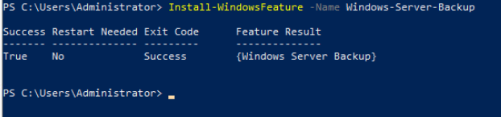

域控制器需要安装Windows Server Backup工具才能进行备份，可以通过服务器管理器或者Windows PowerShell执行命令来完成安装。
方式一：通过服务器管理器安装Windows Server Backup
- 使用Administrator登录本地主机。
- 在开始菜单中单击“服务器管理器”。
- 单击“添加角色和功能”。
- 在弹出的对话框中单击“下一步”。
- 选择“基于角色或功能的安装”并单击“下一步”。
- 选择“从服务器池中选择服务器”并单击“下一步”。
- 勾选Windows Server Backup并单击“下一步”。
- 单击“安装”。
方式二：通过Windows PowerShell执行命令安装Windows Server Backup
- 在下方搜索栏中输入“Windows PowerShell”。
- 右键单击“Windows PowerShell”选择“以管理员身份运行”，打开Windows PowerShell。
- 执行以下命令，进行安装。
Install-WindowsFeature -Name Windows-Server-Backup
回显如下，以Windows Server 2016为例：
